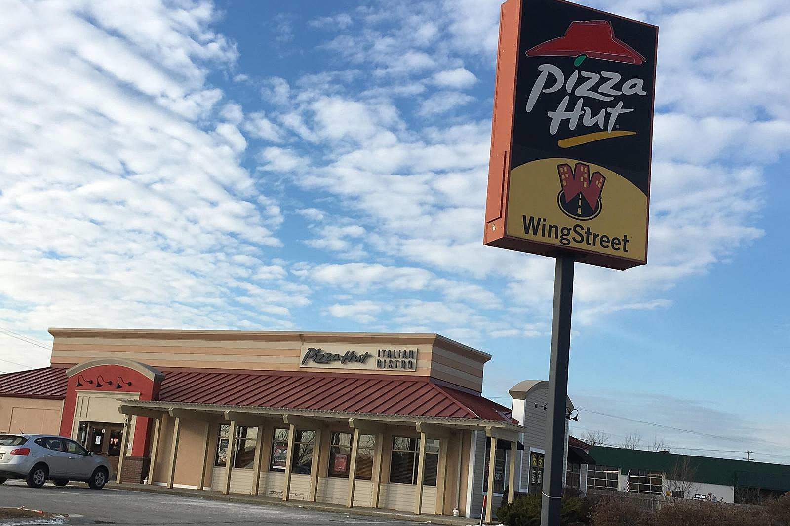

My first official job I worked for was Hannaford's. I worked as a service clerk for 2 or 3 month when I first started out, then I started to train as a cashier and essentially stuck until I actually left. I got good praise fom management a lot of times for being quick on my feet and in response. I worked there from July of 2016 to February of 2017.

My second and current job that I have is delivering pizza for Pizza Hut. I am also trained as a production line cook. However, being a production line cook is not my main job title nor is it the the job I normally do for the company. I have been working with Pizza Hut since March of 2017-present 2019. I have enjoyed so far as a part-time job.